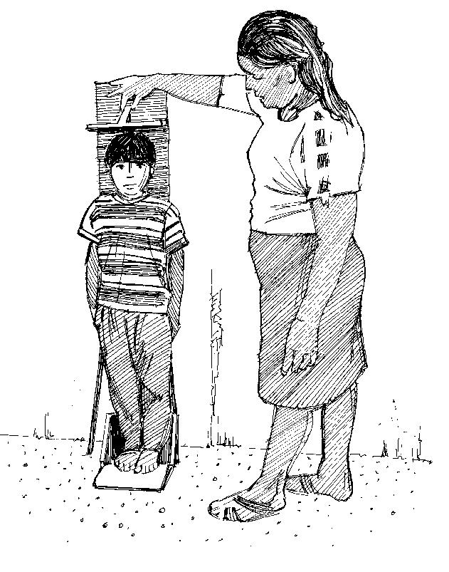

Pourquoi est-il important de mesurer le poids et la taille?
- Cela aide à déterminer si l’enfant grandit bien.
- Si les valeurs obtenues montrent que l’enfant est émacié, maigre ou gonflé, il est possible qu’il souffre de malnutrition aiguë; il doit alors recevoir un traitement et des soins nutritionels.
Ce que vous devez savoir
- Il est important d’être aussi précis que possible lorsque vous prenez des mesures.
- Il faut retirer les vêtements et chaussures de l’enfant pour le peser. Ses chaussures doivent être retirées pour mesurer la taille. Pour rassurer la personne responsable de l’enfant, essayez de prendre ces mesures en privé (par exemple en utilisant un paravent).
- Deux personnes doivent être présentes pour prendre les mesures (en particulier pour la taille). Si le parent ou la personne s’occupant de l’enfant est présent, il peut rassurer ce dernier.
- Les mesures doivent être lues à voix haute et claire et consignées immédiatement pour éviter toute erreur.
Comment mesurer la taille (longueur)
- Les enfants de moins de deux ans sont mesurés allongés (longueur). Les enfants de plus de deux ans sont mesurés debout (hauteur). Hauteur et longueur veulent dire la même chose: ils correspondent à la taille de l’enfant.
- Si vous ne connaissez pas l’âge de l’enfant, les enfants de moins de 87 cm sont mesurés allongés. Si un enfant de moins de deux ans refuse de s’allonger, mesurez sa hauteur debout et ajoutez 0,7 cm à la taille obtenue. Si un enfant de plus de deux ans ne peut pas se tenir debout, mesurez sa longueur allongé et soustrayez 0,7 cm à la valeur obtenue.
Allongé
- Placez la planche de mesure à plat par terre, sur une table ou sur un banc.
- Retirez les chaussures de l’enfant et placez-le délicatement sur le dos au centre de la planche.
- Tenez la tête de l’enfant par les côtés, en couvrant les oreilles, et (avec l’aide de l’assistant ou de la personne s’occupant de l’enfant) positionnez la tête de manière à ce qu’elle touche la planche. La tête devrait être placée de sorte que la ligne de regard de l’enfant soit perpendiculaire à la planche.
- Placez délicatement vos mains sur les chevilles ou les genoux de l’enfant pour les garder plats et droits. Tout en positionnant les jambes de l’enfant, placez la partie coulissante de la planche contre la plante des pieds de l’enfant, qui devrait former un angle droit avec la planche.
- La personne prenant les mesures lit à voix haute la mesure en arrondissant au millimètre.
- Il faut mesurer une seconde fois. L’autre personne prend note immédiatement de la mesure.
Debout
- Retirez les chaussures de l’enfant.
- Placez l’enfant debout au centre de la planche de mesure.
- Pressez fermement les chevilles et genoux de l’enfant contre la planche (avec l’aide de l’assistant ou de la personne s’occupant de l’enfant), en s’assurant que sa tête soit droite et qu’il regarde droit devant lui.
- La tête, les épaules, le derrière et les talons de l’enfant doivent toucher la planche.
- La partie coulissante de la planche doit reposer droite sur le haut de la tête.
- La personne prenant les mesures lit à voix haute la mesure en arrondissant au millimètre.
- Il faut mesurer une seconde fois. L’autre personne prend note immédiatement de la mesure.
Comment peser
- Le poids peut être mesuré en utilisant une balance suspendue à ressort de type Salter (l’enfant est suspendu sous la balance) ou une balance électronique qui permet de peser l’enfant dans les bras du parent ou de la personne s’en occupant.
- Le matériel devrait faire l’objet de contrôles réguliers pour être calibré par rapport à un poids de référence (par exemple, 5 litres d’huile), et toujours être remis à zéro avant d’être utilisé.
- Les nourrissons de moins de six mois doivent généralement être pesés sur des balances spécialement prévues pour les bébés, disponibles dans les hôpitaux et dispensaires. Ils peuvent aussi être pesés sur la balance Salter en étant placés dans un harnais.
Utilisation des balances suspendues Salter
Dans un établissement de santé, la balance est suspendue au plafond ou à un support. Dans la communauté, elle peut être accrochée à un arbre ou un trépied, ou suspendue à un bâton tenu par deux personnes.
- Attachez le harnais de pesage (ou un hamac pour les plus jeunes enfants) à la balance.
- Vérifiez que l’aiguille est sur zéro.
- Retirez les vêtements et chaussures de l’enfant.
- Placez l’enfant dans le harnais de pesage. Assurez la sécurité de l’enfant et restant à proximité et en plaçant un bras devant l’enfant et l’autre derrière afin de le garder en équilibre.
- Lisez le poids lorsque l’enfant est calme et que l’aiguille de la balance arrête de bouger. Il faut lire la balance à la hauteur des yeux et donner la valeur à voix haute en arrondissant à 100 g près.
- Il faut mesurer une seconde fois. L’autre personne prend note immédiatement de la mesure.
S’il n’y a pas de harnais de pesage à disposition, il est possible de suspendre l’enfant dans un vêtement de sa mère, un bac ou un panier. Dans ces cas, assurez-vous que la balance soit bien remise à zéro.
S’il n’est pas possible (pour des raisons culturelles ou climatiques) de retirer les vêtements de l’enfant, un poids moyen de vêtements devrait être déduit du chiffre obtenu.
Utilisation de balances électroniques
Les balances électroniques sont très précises, qu’elles fonctionnent avec des piles ou à l’énergie solaire. Elles sont conçues pour permettre au parent ou à la personne s’occupant de l’enfant de le tenir pendant la pesée.
- Placez la balance sur une surface plane dans un endroit bien illuminé.
- Assurez-vous que les quatre pieds de la balance touchent le sol.
- Retirez les vêtements de l’enfant.
- Allumez la balance en agitant la main près du détecteur solaire. (L’image d’un adulte indique que la balance est prête à peser un adulte.)
- Le parent ou la personne s’occupant de l’enfant monte d’abord sur la balance, sans l’enfant. Le poids apparaît et il est enregistré dans la mémoire de la balance. L’adulte reste sur la balance.
- Passez de nouveau la main à proximité du détecteur solaire. La balance indique qu’elle est prête à peser un adulte avec un enfant. (L’image d’un adulte tenant un enfant dans ses bras apparaît.)
- L’enfant à peser est tendu à l’adulte sur la balance, qui reste immobile.
- La balance montre le poids de l’enfant. Lisez le poids à voix haute ; une deuxième personne le consigne immédiatement.


Mesure de la taille et du poids d’un enfant